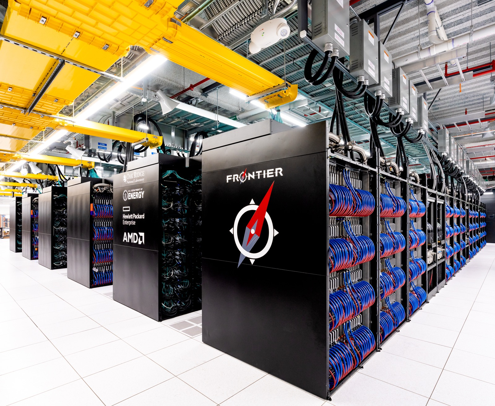
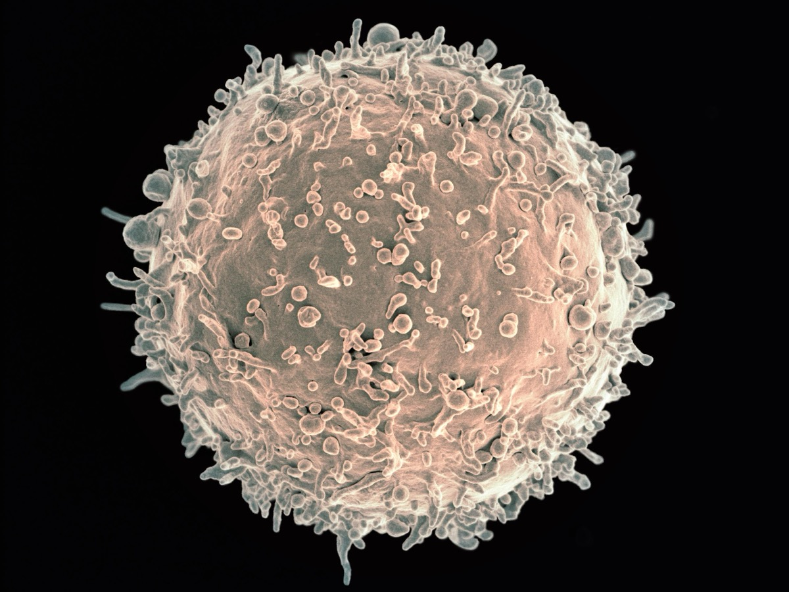

Executive Summary
This article reads the $1.8 billion biological data program that Biohub announced on 7 October 2026 together with the U.S. Department of Energy, the National Institutes of Health, Google DeepMind, Meta and Isomorphic Labs. It is not the announcement of a new model. The reason this money came together is that the 'virtual cell', software meant to predict on a screen how a real cell will respond to a stimulus such as a drug or a mutation, still does not have enough to be trained on.
Split the sum and $800 million of the $1.8 billion was disclosed for the first time that day. The Department of Energy puts in more than $500 million over five years, and the three companies put in $300 million between them. The remaining $1 billion is the $500 million Biohub had already pledged in April, plus access to data the National Institutes of Health built with more than $500 million of earlier federal money. And the verb the announcement assigns to Biohub is not generate. It is standardize.
The amounts, quotations and schedules carried in this article come from the Biohub announcement, from the 7 October press release of the Office of Science at the Department of Energy, and from Reuters reporting of the same date. Section 2, which counts the newly disclosed commitments apart from the shares counted again, section 3, which reads the change in wording between the April and October announcements as a redefinition of roles, and section 5, which treats the early access given to commercial partners as the price paid for standardization, belong to no party in the story. They are this article's reading.
Key numbers
Sources: Biohub announcement (7 October 2026), Reuters (7 October 2026).
$800M
Disclosed for the first time on 7 October
More than $500 million from the Department of Energy plus $300 million from the three companies
Trillions
Cells a predictive model will need
Today's datasets stop at hundreds of millions, Biohub's head of science said
One year
Until the first dataset
A working predictive model is set five years out
Zero
'AI-ready' and 'standardize' in the April launch
Both words appear in the first two paragraphs of the October release
Two Federal Agencies and Three Companies Joined on 7 October
Biohub is the non-profit research institute founded by Mark Zuckerberg and Priscilla Chan. What stands behind the $1.8 billion in the announcement it issued on 7 October 2026 is not only cash. The organizations are "investing $1.8 billion in funding, data, computation, and new measurement technology," the release says, and calls that "the largest coordinated commitment to generating AI-ready biological data to date."
The goal is a virtual cell. The shortest account of it in the release comes from Nicole Kleinstreuer, NIH Deputy Director for Program Coordination, Planning, and Strategic Initiatives. "By combining resources and expertise, we can accelerate the development of universal cell models with sufficient biological complexity to predict how any cell responds to an intervention." In plain terms, a drug candidate could be run on a screen before it is run in a laboratory.
What the Department of Energy brings is equipment as much as money. The press release its Office of Science issued the same day says DOE is investing more than $500 million over five years in fundamental cell research, and lists the assets that come with it: the nation's premier supercomputing clusters; the Joint Genome Institute for genome annotation; the Environmental Molecular Sciences Laboratory for microbial and molecular scale research; X-ray and neutron scattering; cryo-electron microscopy and tomography; and robotic laboratories that run experiments on their own. The same release says the partnership delivers on President Trump's executive order "Launching the Genesis Mission." Darío Gil, DOE's Under Secretary for Science, said that by uniting the capabilities and expertise of DOE's National Laboratories with philanthropic and scientific leadership, "we are setting a new standard for open, data-driven science."

The program itself did not begin in October. Biohub launched it as the Virtual Biology Initiative with $500 million behind it on 29 April 2026. The names on that launch were the Allen Institute, the Arc Institute, the Broad Institute, the Wellcome Sanger Institute, the Human Cell Atlas, the Human Protein Atlas, the Billion Cells Project and Renaissance Philanthropy, with NVIDIA as a technology partner. Six months later two federal agencies and three companies joined, and the combined figure became $1.8 billion.
Of the $1.8 Billion, $800 Million Was New That Day
Add up the four amounts the announcement names and $1.8 billion comes out exactly. What differs among them is their character. One is a commitment made public that day. Another is budget already spent, counted again.
| Contributor | Amount | Character |
|---|---|---|
| U.S. Department of Energy | More than $500M | First disclosed on 7 October. Five years of lab measurement, modeling and computation |
| Google DeepMind, Meta and Isomorphic Labs | $300M | First disclosed on 7 October. The three companies investing collectively |
| Biohub | $500M | Already pledged at the 29 April launch. $400 million for its own measurement technology, $100 million for research outside Biohub |
| U.S. National Institutes of Health | More than $500M | Not new cash. Coordination and contribution of datasets, repositories and knowledge bases built with prior federal investment |
▲ The four contributions sorted by character | Amounts and descriptions are taken from the Biohub announcement and the Office of Science press release. The character column is not in either source; this article added it.
The sentence covering the NIH share is the plainest of the four. NIH will "coordinate the contribution of relevant datasets, repositories, and knowledge bases developed through more than $500 million in prior federal investment aligned to this initiative," the announcement says. That is not writing a fresh cheque. It is handing over the keys to a warehouse built with public money years ago. Biohub's $500 million is likewise a figure announced six months earlier that re-enters the running total.
Laid out this way the figure can read as shrinking, and reading it only that way misses something. What NIH puts on the table is harder to come by than money. Biomedical data that hundreds of millions of dollars could not assemble overnight is already sitting in federal repositories. Access to it, and the work of coordinating it, is what came onto the table here. The $800 million of new money buys new measurement. The $1 billion already in place brings measurement already taken.
The NIH share does not stop at a pile of raw data. Through its Bio Genesis Mission, the announcement says, NIH "will bring together existing biomedical datasets, national data infrastructure, and research programs to help build AI-ready resources for the broader scientific community." The assets it names are the national biomedical repositories catalogued by NIH's National Library of Medicine, the National Center for Biotechnology Information, and NIH Common Fund programs "that are already developing coordinated biological atlases, shared data standards, and AI-ready biomedical datasets." Matching formats is not a job that starts here. Part of it has been running on federal budget already, and that part is what gets plugged in.

Sort the four shares by character and one question is left over. To put newly measured data and long-accumulated data into a single model, the two have to be the same shape. Who does that work is written into the announcement.
The Verb Assigned to Biohub Is 'Standardize'
The sentence in the announcement that assigns Biohub its share is short. "Biohub will work with NIH to standardize these datasets for AI model training." Another passage in that announcement spells the job out a little further. Biohub is bringing partners across disciplines and industries together to "build the layer that lets their datasets work in a unified fashion," and the contents of that layer are "shared standards, common identifiers, and a single point of access."
In data work, those three are a familiar list. Different laboratories call the same gene by different names, write the same cell line under different identifiers, and leave the same measurement in different units and different file formats. Each is perfectly usable on its own. The moment you try to gather them into one training set, the work stops. Shared standards and common identifiers are what unstick it.
Why that share went to Biohub is explained further down the announcement. Over the past decade Biohub has led open dataset projects such as Tabula Sapiens, OpenCell and Zebrahub, and it has built and maintained community data infrastructure including CELLxGENE and the CryoET Data Portal. A single point of access is not a slogan newly raised over this institute. It is a thing it has already built twice. The same passage sets building the scientific community around those resources beside building the layer and calls it equally important: convening researchers across institutions and disciplines, connecting complementary expertise and capabilities, and creating opportunities to define and pursue ambitious scientific questions together.
The Words That Changed in Six Months
Put the 29 April launch announcement beside the 7 October expansion and look for the same words, and the difference surfaces. The April text contains neither "AI-ready" nor "standardize" nor "standards". What it has is a single mention of "shared frameworks for data integration". The October release uses "AI-ready" in its first paragraph, and in the paragraph right after it pins Biohub's role to the verb "standardize".
| 29 April launch | 7 October expansion | |
|---|---|---|
| "AI-ready" | Absent | Several times, first paragraph included |
| "standardize" / "standards" | Absent | Appears as the verb assigning Biohub's role |
| How binding the data is phrased | "shared frameworks for data integration" | "shared standards, common identifiers, and a single point of access" |
| Stated goal | "the technologies and multi-modal datasets needed to build predictive models of life" | "an AI-ready open data resource" |
▲ The two announcements word by word | Sources: Biohub launch announcement (29 April 2026) and expansion announcement (7 October 2026). Presence and absence were checked against the body text of both pages. Reading that change as a redefinition of roles is this article's interpretation.
Those who gathered in April were data makers. The Allen Institute, the Broad Institute and the Wellcome Sanger Institute each hold large datasets of their own. October brought in the organizations that will train on that data, alongside the agency holding data already made and stored. Change the participants that way and the bottleneck changes too. Among makers the problem is "let us make more." Once what was made and what had accumulated sit in the same room, the problem becomes "let us make them mesh."
Set the Department of Energy release of 7 October alongside it and the words part once more. DOE writes that its Office of Science, NIH and Biohub "signed a Memorandum of Understanding (MOU) to advance the frontier of Super Intelligence (SI) in biology." The Biohub release describes the same partnership as formed "to advance the frontier of artificial intelligence in biology." The term is lodged in the official name of the data project DOE brings as well. The bioimaging project under the Genesis Mission is called the "Lakehouse-enabled SI-ready multi-modal bioimaging data architecture (LAMBDA)." Even Darío Gil's quotation is printed differently in the two releases. In Biohub's, Gil begins "This partnership represents a critical step forward in leveraging artificial intelligence for public benefit." In DOE's, the same sentence reads "Advancing Super Intelligence in biology represents a critical step forward in leveraging new technologies for public benefit." The word in front parted that way. The word behind it did not: data that is ready to be learned from.
"AI-Ready Data", a phrase Pebblous has been using for years, has turned up intact as the name on a budget that a government and big technology companies put together. The same idea has surfaced in a different field, biology, and on a $1.8 billion program at that. A shared name does not make the work underneath it any easier.
Cells Have No Library to Read
Why money is being gathered to make data first is carried in what Biohub's Head of Science, Alex Rives, told Reuters. His sentence ran this way. "We need to capture the language of biology, we need to capture the language of the cell. And that doesn't exist today."

Recall the conditions under which language models got good so quickly and the remark gets sharper. Text people had written over decades was already piled up on the internet, and the side building the models could scrape the pile. The library came first and the reader came later. Cells are the reverse. No pile has built up high enough to scrape, so the books have to be written before the model is built, and written in a shape that lets dozens of institutions with different instruments shelve them together.
Rives gave the volume as a number as well. Current cell datasets run to hundreds of millions of cells, while an accurate predictive model will require billions and eventually trillions. That is why the Biohub announcement puts its weight on measurement technology. The release describes cryo-electron tomography "which resolves near-atomic detail inside the cell" and microscopy "that can image millions to billions of cells in living tissue."
What is short is not only volume. The initiative will deliver the foundational measurements to train these models, the release says, "expanding cell response data to interventions across far more cell types and conditions than have yet been studied." To learn how a cell responds to a stimulus you have to observe the response, and to observe it you first have to apply the stimulus. That is why the technology list Biohub puts $400 million behind reaches beyond measuring equipment. "Engineering tools to build and perturb biology at molecular, cellular, tissue, and whole-organism levels" are written into the same list. Text on the internet was already written and could be scraped. Cell response data only comes into being once somebody touches the cell.
The schedule was given as two points. About a year until the first dataset, five years to a working predictive model. Rives said the work would normally take decades and that the partners aim to compress it into five.
The same diagnosis came from the side that builds the models. Pushmeet Kohli, VP of AI for Science at Google DeepMind and Google Cloud's Chief Scientist, said in the release: "The quest to build a virtual cell is one of the great collective scientific challenges and key to understanding the mechanisms of life. We will not solve this challenge without open, experimental biological data at an unprecedented scale, showing how living cells behave and respond to changes." Max Jaderberg, President of Isomorphic Labs, pointed at scale: "Generating the data to solve predictive systems biology requires scaling past the limits of what any single organization can produce today." What the two companies that build models talked about, when their turn came, was not models. It was data.
The Condition Attached to Company-Funded Data
The release calls what comes out of this "an open resource for the research community," and Kohli's quotation in the same release calls it "an open, standardized data commons." When it opens, and to whom, is not written there. That part came out in a Reuters interview the same day.
Reuters put it this way. "The datasets will eventually be released publicly, but companies that fund them get a head start." Rives's explanation follows. "With commercial funders we have embargo periods where there's a period of time where the groups can work on the data, and then it becomes available as a public scientific resource." In the same piece Rives said the government-funded work running in parallel will carry no such restrictions, and that Biohub plans to approach pharmaceutical companies and philanthropies next.
How long the period runs differs by source. Reuters reported that an embargo exists and printed no duration. The figure of one year came from Axios reporting, and other outlets have carried it on as a one-year window of first access. The Biohub announcement itself gives no period at all. Set beside the schedule that puts the first dataset about a year out, the point at which this condition starts to bite is around then as well.
What reads here is the shape of the design. Standardization and integration were not set up as something that happens when participants gather in good faith. They were set up to run on a price, the right to work on the data first. One rule for data made with government money, released at once, and another for data made with company money, released after a period: that is the device that pulls private funding in under the name of open data. So this money is buying an agreement too, the one that makes participants with different motives fit the same spec. Biohub has never explained it this way. The price of standardization is what this article found inside the embargo.
Why Pebblous Is Watching This Announcement
The usual way to read this announcement is as news that Zuckerberg has put down another large sum. To anyone who works with data, what shows first is not the size of the money but what the money is trying to buy. It is not an announcement that buys a model, and it is not even an announcement that buys only data. A price has been put on making scattered data mesh inside one model.
An article posted on this blog five months ago touched the same spot from another angle. It analyzed the results of the virtual cell challenge run by NVIDIA, the Arc Institute and others, "The GPU Was Never the Bottleneck — Data Was", and dealt with the fact that among submissions from more than 1,200 teams the largest model did not win. The summary paragraph of that article listed four pieces of evidence that capital and attention were migrating below the model layer and down to the data layer, and one of the four was the 120 million cell pledge that the Arc Institute, Tahoe and Biohub put out together in January 2026. A name that went past in a single line of that summary stands at the center of a $1.8 billion announcement five months later.
So the question this announcement leaves is not about the amount. It is about what is possible. Money can make data. Buy the instruments, run the experiments, hire the people, and the cell count goes up. Can the work of making those cells mesh well enough to train a model be bought the same way? Biohub has taken the side that says it can, and it appears to know that technology alone will not get there, since it also wrote into the deal who gets to use the data first. A year from now, when the first dataset arrives, that design starts to answer.
The scale differs, but the same structure turns up inside companies often enough. Every department has data, and as soon as it goes into one model the identifiers do not line up, the units differ, and the as-of dates sit all over the place. Three things are worth checking when that happens. Do the datasets we hold call the same thing by the same name? When different sources get combined, is there someone whose job that is? And between the side handing data over and the side using it, is what each gets in return written down? The third question is the one Biohub answered with an embargo.
Thank you for reading this far. The announcement itself is on the Biohub newsroom, and the reporting that carried the funding and the interview together is at Reuters. If you have ever merged data from different sources into a single training set, we would be glad to hear where it held you up longest.
References
Official announcements
- 1.Biohub. (2026-10-07). "Open data for predictive AI models of biology: $1.8 billion committed." Biohub Newsroom.
- 2.Biohub. (2026-04-29). "Virtual Biology Initiative." Biohub Newsroom.
- 3.U.S. Department of Energy, Office of Science. (2026-10-07). "DOE, NIH, and Biohub Partner to Build Foundational Data for Predictive Biological Super Intelligence Models."
Reporting
- 4.Krystal Hu. (2026-10-07). "US government, Google join Zuckerberg-backed Biohub in $1.8 billion push for AI biology data." Reuters.
- 5.The Next Web. (2026-10-08). "Biohub, Meta, Google DeepMind and the US pool $1.8bn for AI biology data."
- 6.Bioengineer.org. (2026-10-07). "Global Coalition Commits $1.8 Billion to Build Open Data for AI Models of Biology."
Earlier article on this blog
- 7.Pebblous. (2026-05-12). "The GPU Was Never the Bottleneck — Data Was." Pebblous Blog.